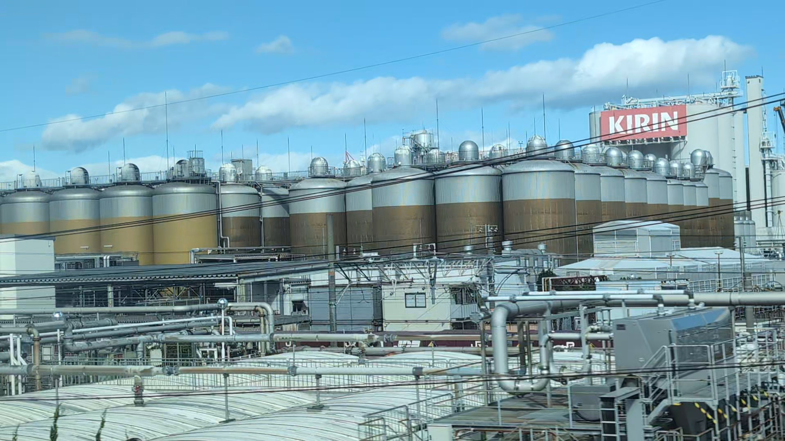
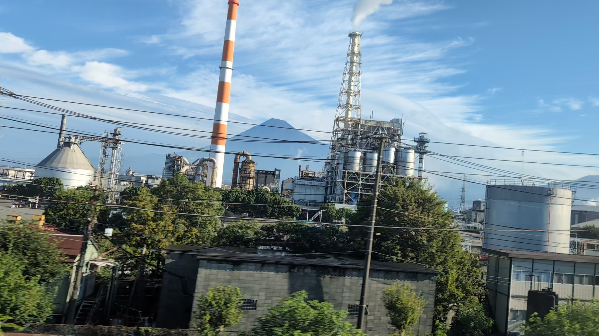
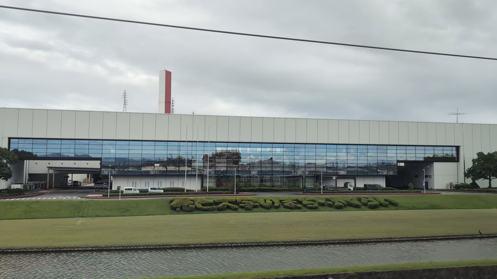
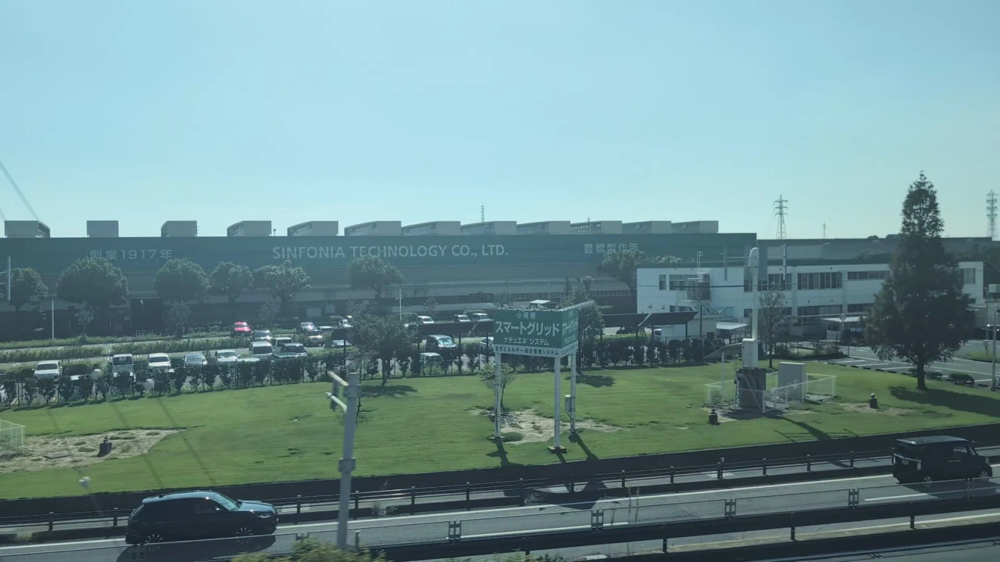
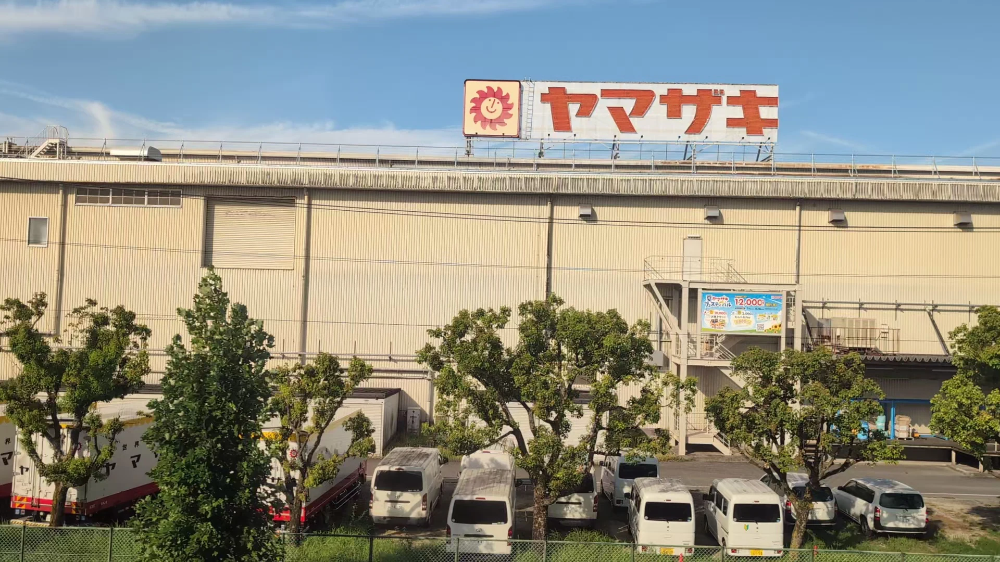
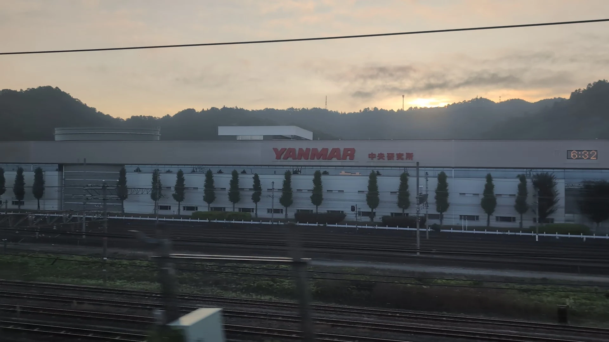

Posti EA destra nel senso di marcia UCC · Stabilimento di Fuji
Una torre del caffè e il monte Fuji
Cerca la scritta «UCC COFFEE FUJI» sulla torre bianca. Dietro lo stabilimento che produce caffè tostato si staglia il monte Fuji.
Tōkaidō Shinkansen · Tokyo–Shin-Osaka
Caffè, dolci, cosmetici. Accanto ai binari si trovano i luoghi dove nascono tanti prodotti di ogni giorno.
Esplora le fotografie 26 luoghi↓
Mishima → Shin-Fuji
Una torre del caffè e il monte Fuji
Cerca la scritta «UCC COFFEE FUJI» sulla torre bianca. Dietro lo stabilimento che produce caffè tostato si staglia il monte Fuji.

La carta di ogni giorno, ai piedi del Fuji
Le ciminiere bianche e rosse e il monte Fuji aiutano a orientarsi. All'interno del sito, lo stabilimento Shin-Fuji di Crecia Kasuga produce carta igienica e altri prodotti in carta per la casa.

Una ciminiera nei colori dell'arcobaleno
Qui si produce, fra l'altro, carta per cartone ondulato. L'illuminazione «Nijien» nella foto è un allestimento limitato all'11–23 novembre 2026: non è una veduta abituale.
Shizuoka → Kakegawa

La birra di Shizuoka nasce a Yaizu
File di serbatoi argentati e il simbolo della stella. Da questo stabilimento di Yaizu arriva anche Shizuoka Bakushu, la birra venduta soltanto nella prefettura di Shizuoka.

Il «＋S» sulla confezione di kamaboko
Il marchio Kibun spunta sopra una fila di tetti rossi. Qui si producono kamaboko e chikuwa, specialità a base di pasta di pesce. Il codice di produzione «＋S» sulle confezioni indica proprio questo stabilimento.
Accanto al ponte ferroviario sul fiume Ōi. Dal finestrino opposto si vedono gli edifici Ajinomoto.

Il nome del caffè, oltre il fiume
Quando si apre l'ampio greto del fiume, guarda verso le montagne. Lo stabilimento di Shimada produce caffè e usa anche i fondi rimasti dopo l'estrazione come combustibile per le caldaie.
Guarda a monte dal ponte sul fiume Ōi. Lo stabilimento dista circa 1,3 km dai binari.

Porridge di riso e pane da infornare
La scritta «Knorr» appare su una parete bianca dal profilo curvo. Allo stesso indirizzo si trovano lo stabilimento di Shizuoka di Ajinomoto Foods, che produce okayu, un porridge di riso, e la sede di Shimada di Ajinomoto Bakery, che prepara impasti surgelati per il pane.
Vicino al ponte sul fiume Ōi, dalla parte opposta dei binari rispetto alla torre rossa Kibun.
La foto permette di riconoscere l'esterno del sito. Non è stato verificato quali linee produttive si trovino nei singoli edifici.
Kakegawa → Hamamatsu

Cosmetici sotto un grande tetto bianco
Un grande tetto bianco corre lungo i binari. Nello stabilimento si producono articoli per il trucco; la copertura protegge i prodotti da vento, pioggia e sole durante le operazioni di spedizione.

«＋P»: un indizio che porta a Kakegawa
Il marchio rosso Marudai Food spunta sopra gli alberi, con una fila di finestre tonde sotto. Nel 2023 l'azienda ha presentato i suoi würstel Long Wiener prodotti qui. Il codice dello stabilimento sulle confezioni è «＋P».
Circa 4 km da Kakegawa verso Hamamatsu. In direzione Shin-Osaka, dopo Shiseido.

Il tuo treno riflesso nel vetro
Osserva la lunga facciata vetrata di questa fabbrica di cosmetici. Con la luce giusta, potresti vedere riflesso proprio lo Shinkansen su cui stai viaggiando.

La parete blu di Pocari Sweat
Sul verde del prato risalta una grande parete blu con «POCARI SWEAT». Basta uno sguardo per riconoscere lo stabilimento che produce questa e altre bevande.

Scatole che proteggono l'elettricità
Cerca «NITO 日東工業» sulla parete bianca. I piccoli armadi prodotti qui sono involucri che ospitano e proteggono apparecchiature elettriche.

Il marchio compare anche in giardino
Segui le onde gialle e arancioni sulla parete bianca: anche nel giardino appare un grande marchio. Qui si producono pannolini per bambini e adulti, prodotti per l'igiene mestruale e panni per la pulizia, fra altri articoli.
Circa 4 km da Kakegawa verso Hamamatsu. In direzione Shin-Osaka, dopo Nitto Kogyo.

Dal curry agli snack
Cerca la torre con la scritta «ハウス食品». In questo stabilimento di Fukuroi si producono Vermont Curry, Hokkaido Stew e gli snack di mais Tongari Corn.

Dai binari ai mari del mondo
Lettere rosse YAMAHA e una facciata di lamelle bianche verticali. Qui si fabbricano motori fuoribordo, quelli montati sulla poppa delle imbarcazioni.

Dai cappelli alle punte dei pennarelli
L'insegna verde «TEIBOW» indica la sede e lo stabilimento di un'azienda che dalla lavorazione del feltro per cappelli è passata alla produzione di punte per pennarelli.
Non è stato verificato quali specifiche tipologie di prodotto siano attualmente fabbricate in questo stabilimento.
Hamamatsu → Toyohashi

Una S rossa sopra i tetti
Oltre i tetti delle case spunta la S rossa che forse riconosci dalle automobili. È la sede di Suzuki. La produzione dei motori per motociclette, un tempo svolta a Takatsuka, nel 2018 è stata trasferita a Miyakoda, sempre a Hamamatsu.
Tra la stazione di Hamamatsu e il lago Hamana, vicino alla stazione JR Takatsuka. Verso Shin-Osaka si vede prima di attraversare il lago; verso Tokyo, dopo.

Trasportare il silicio con delicatezza
Oltre il prato, una lunga parete riporta «豊橋製作所» e «創業1917年»: stabilimento di Toyohashi e fondato nel 1917. È uno dei principali siti produttivi di sistemi che spostano sottili dischi di silicio senza contaminarli durante la fabbricazione dei semiconduttori, come quelli degli smartphone.
A Mitsuya-cho, Toyohashi, dal lato della stazione di Futagawa rivolto verso Tokyo. Verso Shin-Osaka, prima dell'arrivo a Toyohashi; verso Tokyo, dopo la partenza.
Lo stesso nome si vede anche circa 800 m a sud della stazione di Nagoya. Lì si tratta di un annuncio lungo circa 70 m sulla facciata del centro commerciale Market Square Sasashima.

Mikawa-Anjo → Nagoya

Il pane del mattino nasce lungo i binari
Il simbolo del sole e la scritta rossa «ヤマザキ» passano proprio accanto al treno. Vicino a Mikawa-Anjo, questo stabilimento produce pane e dolci giapponesi e occidentali.

Un'insegna nota, un ruolo che cambia
La pubblicità rossa, bianca e blu di «セロテープ» aiuta a riconoscerlo. Questo stabilimento di nastri adesivi sta ampliando il proprio ruolo anche nei prodotti per uso sanitario.
Le informazioni sugli impianti del 2026 indicano nastri adesivi per uso sanitario, in carta e in plastica. Una spiegazione ufficiale del 2025 descrive il concentramento della produzione legata a Cellotape a Saitama. L'insegna, da sola, non prova che Cellotape sia ancora prodotto ad Anjo.
Nagoya → Gifu-Hashima
Maibara → Kyoto

Un grande orologio dopo Maibara
Un edificio allungato con le lettere rosse «YANMAR» e un grande orologio. Questo istituto di Maibara studia tecnologie per ridurre i consumi dei motori ed energie alternative.
Verso Shin-Osaka, subito dopo Maibara: un viaggiatore lo ha osservato circa un minuto dopo la partenza su un Kodama. Verso Tokyo, prima dell'arrivo a Maibara.

Qui nascono i viaggi in ascensore
L'alta torre è dedicata alla ricerca sugli ascensori. Nello stesso sito si trova una fabbrica di modelli standard e su misura: ricerca e produzione condividono questo spazio.

Dolci e gelati su enormi insegne
Una fila di grandi insegne di dolci e gelati. Qui si producono Yukimi Daifuku, Coolish e Toppo, fra gli altri; non tutti i prodotti raffigurati sulle insegne, però, sono fabbricati in questo stabilimento.

Anche il riso istantaneo nasce qui
A Ritto cerca l'edificio con la scritta «日清食品». Si produce anche riso istantaneo in coppetta, come Curry Meshi. È uno stabilimento diverso da quello di Kansai, sul lato E, dalla parte opposta dei binari.
Kyoto → Shin-Osaka

La casa del whisky ai piedi del monte
Cerca la scritta «山崎» oltre i tetti delle case e i cavi. In questa distilleria si produce il whisky di malto utilizzato per il single malt Yamazaki.
Anche questi luoghi hanno una storia da raccontare. Stiamo verificando che cosa si riesce a distinguere oggi dal treno e raccogliendo fotografie.
Shin-Yokohama–Odawara · Posti A · Lato dedotto dalla posizione
Circa 5 km dalla stazione di Odawara in direzione Tokyo.
Produce dentifrici come Systema e Clinica. Nel libro compare un edificio verde. Resta da verificare quanto se ne vede oggi oltre le barriere antirumore.
Maibara–Kyoto · Posti E · Lato dedotto dalla posizione
A Kamiya, Yasu, circa 300 m dai binari sul lato del lago Biwa.
Accanto ai campi si producono cosmetici SK-II. Stiamo verificando se dal finestrino si riconosce ancora lo stesso edificio fotografato nel libro.
In classe standard, viaggiando verso Shin-Osaka i posti A sono a sinistra e i posti E a destra. Verso Tokyo, i lati si invertono. Nelle carrozze Green Car, il lato D corrisponde al lato E della classe standard.
Ruoli e prodotti delle singole strutture sono stati verificati su fonti consultate nel novembre 2026, prevalentemente in giapponese. All'interno dello stesso tratto, i luoghi non seguono necessariamente l'esatto ordine di passaggio. Le distanze sono indicative.
Fotografie: michikusa. Treno nella foto di POLA: © Disney.
Kei Kurihara, «東海道新幹線の車窓は、こんなに面白い！» (2016, originale giapponese)